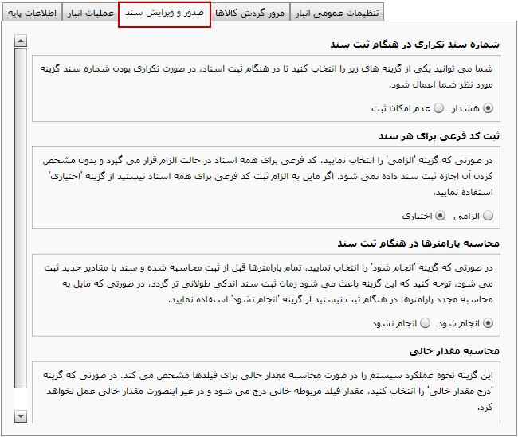
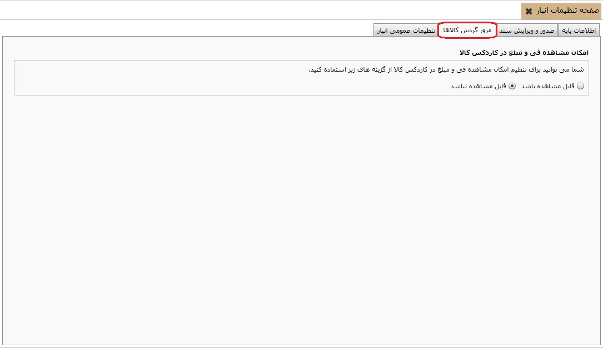
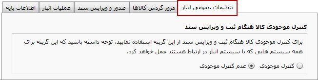

با کلیک روی منوی «صفحه تنظیمات انبار» صفحه زیر باز می شود و شما می توانید در صورت نیاز تنظیمات پیش فرض را تغییر دهید.

همان طور که مشاهده می کنید این قسمت از پنج تب اطلاعات پایه، عملیات انبار، صدور و ویرایش سند، مرور و گردش کالا ها و تنظیمات عمومی انبار تشکیل شده که با ورود به هر کدام می توانید تنظیمات پیش فرض را با توضیحات داده شده به نسبت نیاز خود تغییر دهید.
از تب اطلاعات پایه که در شکل بالا مشاهده می کنید می توانید اطلاعات پایه
انبار همچون عملیات انبار و تخصیص مبناها را به صورت آماده از فایل
xml خواندن نمایید. برای این کار روی گزینه
 کلیک کنید تا پنجره زیر نمایش داده شود:
کلیک کنید تا پنجره زیر نمایش داده شود:

فایل عملیات عمومی انبار را انتخاب
کنید و روی گزینه مشخص شده کلیک کنید تا عملیات خوانده شده از فایل
در صفحه «مدیریت عملیات انبار» قرار گیرد. همچنین می توانید توسط گزینه
 عملیات انباری که ایجاد کرده اید را در فایل xml ذخیره نمایید.
عملیات انباری که ایجاد کرده اید را در فایل xml ذخیره نمایید.

در تب عملیات انبار می توانید تنظیمات مربوط به تغییرات را طبق توضیحاتی که در شکل بالا داده شده است انجام دهید.
تنظیمات مربوط به صدور و ویرایش سند انبار را می توانید از این قسمت انجام دهید. توضیحات مربوط به هر قسمت کافی می باشد و شما می توانید با توجه به آن ها نیاز خود را رفع نمایید.
در این تب می توانید انتخاب کنید که فی و مبلغ در کاردکس کالا نمایش داده شود یا خیر.
از این قسمت می توانید تعیین کنید که کنترل موجودی برای انبار های تعریف شده در صفحه «مدیریت انبارها» انجام شود یا خیر.
